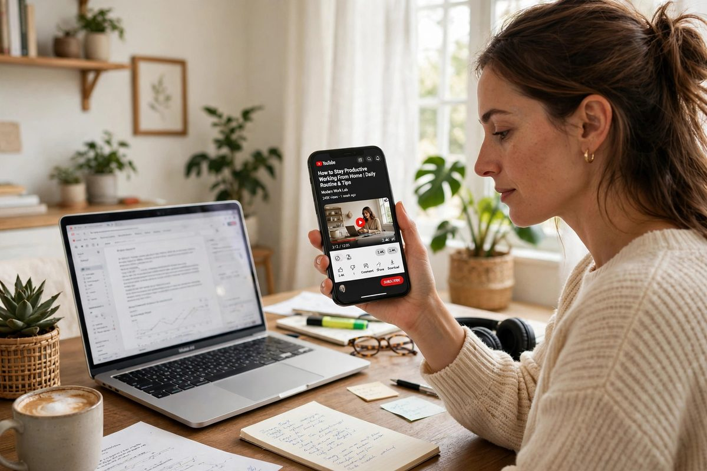

How to Download YouTube Videos: A Complete Beginner's Guide
Learn the legitimate ways to save YouTube videos for offline viewing, step by step, on any device.
Saving a YouTube video to watch later sounds simple, and in many cases it is. The safest route is the one YouTube itself provides: YouTube Premium includes an offline download button inside the official app, and the video stays playable while your subscription is active. This guide walks through the official method first, then explains the other approaches people use, what actually works, and where the limits are, so you can choose the option that fits your device and your situation without installing anything shady.
Use YouTube Premium's offline feature
Open the YouTube app on your phone or tablet and find the video you want. Tap the Download button under the player, choose a quality such as 360p, 720p, or 1080p, and wait for the download to finish. The video appears in your Library under Downloads and plays without an internet connection. Downloads expire after 30 days without reconnecting, and some videos are excluded by the uploader. This method is the only one YouTube officially supports, it keeps the creator's ads and analytics intact, and it works reliably on Android and iOS. If you travel often or have an unreliable connection, it is the most dependable option.
Save a video on your computer
On a desktop browser there is no official download button for most videos, but YouTube Premium subscribers can use the Download option on youtube.com for eligible videos. Without Premium, the practical alternative is to use the video's public information: paste the link into a video-info tool to confirm the title, author, and thumbnail, and then decide whether you have a lawful reason to save it. Screen recording is another route people use for their own content, such as a webinar they hosted. Whatever method you choose, keep the file for personal use and do not re-upload it.
Download on Android and iPhone
On Android, the YouTube app's Download button is the cleanest path, and downloaded videos are managed from the Library tab. On iPhone the same button exists in the YouTube app for Premium members. Third-party downloader apps in app stores frequently disappear, show aggressive ads, or request permissions they do not need, so read reviews carefully and prefer the official app. If storage is tight, choose 360p or 480p, which uses far less space than 1080p, and delete finished videos from the Downloads list when you are done with them.
Common problems and fixes
If the Download button is missing, the uploader may have disabled offline saving, or the video may be a live stream, a Short with restrictions, or age-gated content. If a download stalls, check your storage space and switch from mobile data to Wi-Fi, since large files often pause on metered connections. If a downloaded video will not play, reconnect to the internet once so the app can refresh its licence check. When a video simply cannot be saved, that is usually a deliberate restriction, not a bug, and the respectful move is to stream it or use YouTube's Watch Later list instead.
Keep your downloads organised
A download you cannot find is almost as useless as a video you never saved, so give your collection a little structure from the start. On your phone, the YouTube app organises downloads by playlist, so save videos into named playlists before you download them: one for a course, one for a trip, one for workouts. On a computer, use folders with the same idea and name files with the date first, so they sort in order. Once a month, open your downloads list and delete anything you have already watched, because stale downloads quietly eat storage and make the list harder to search. If a video is important enough to keep long term, make sure you have a lawful right to keep it, and store a note with the original link and the creator's name in the same folder. That way, if you ever want to share it or credit it, the source is right there. Good organisation takes five minutes and saves hours of searching later.
Frequently Asked Questions
Is it legal to download YouTube videos?
Downloading is fine when the video is your own, Creative Commons licensed, or you use YouTube's own offline feature with Premium. Downloading copyrighted videos without permission can infringe copyright.
Do I need an app to download videos?
No. YouTube Premium lets you save videos inside the YouTube app, and browser tools can fetch public video information. Third-party downloader apps are not required and often carry risks.
Why do some videos fail to download?
Age-restricted, private, region-locked, or copyright-protected videos often block downloading. Live streams and very long videos can also fail.